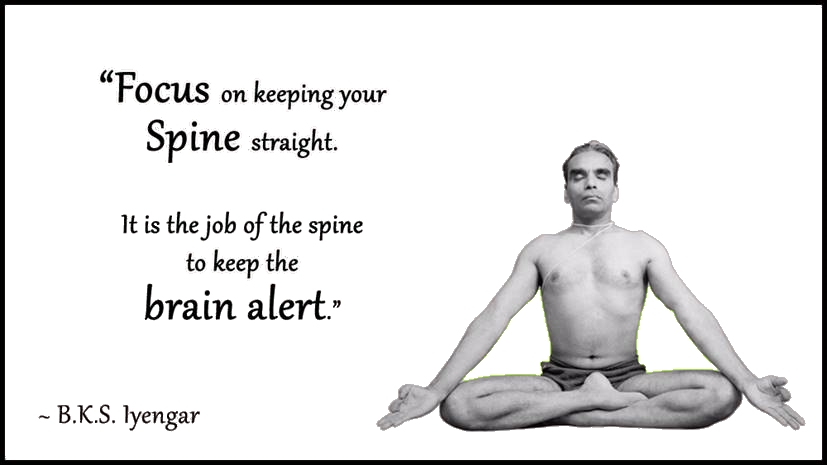
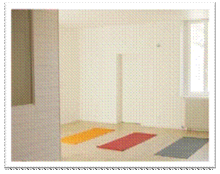

4 RUE DE LA PROCESSION
78100 ST GERMAIN EN LAYE
06 60 50 60 04
A deux pas de la place du marché
A 5 minutes à pied du RER A Saint-Germain en Laye

l Forum des sports le 5 septembre 2015
Venez nous rencontrer sur notre stand, place du marché le samedi 5 Septembre 2015
l Journées portes ouvertes septembre 2015
Cours d’essai gratuits les :
Samedi 5 Septembre à 10h45
Dimanche 6 Septembre à 10h45
Samedi 26 Septembre à 10h45
Dimanche 27 Septembre à 10h45
Réservation souhaitée auprès de Jean-Baptiste NALLET 06 60 50 60 04
Evitez de manger pendant les heures qui précèdent le cours.
l Reprise des cours le 7 Septembre
Consultez le planning 2015 2016
l Stage de Yoga Iyengar® à IBIZA du 17 au 22 Aout 2015

Du 7/9/15 au 29/06/16
Lundi
9h30 – 11h30 niveau intermédiaire / Rachel
18h30 – 20h niveau débutant / Jean-Baptiste
20h – 22h niveau intermédiaire / Jean-Baptiste
Mercredi
Samedi
10h45 – 12h45 niveau débutant / Rachel
Dimanche
Ateliers thématiques. Le planning sera mis à jours en au fur et à mesure de l’année
Pendant vacances scolaires, certains cours seulement sont assurés.
Nous garantissons en moyenne au moins 35 cours par semaine et par horaire sur l’année
BKS IYENGAR
B.K.S. Iyengar, (14 déc. 1918 – 20 Aout 2014), fut l'un des derniers grands maîtres de yoga de notre temps et est toujours considéré comme une légende. Il fut le maitre du célèbre violoniste Yehudi Menuhin et reconnu par Times Magazine comme l’une des 100 personnalités les plus marquantes au monde.
Pour visiter le site officiel de BKS Iyengar cliquez ICI
La méthode de Yoga Iyengar®
La méthode Iyengar® est le fruit de plus de 70 ans consacrés par BKS Iyengar à la pratique et à l’enseignement du Yoga
Elle est basée sur :
Les asanas ou postures qui agissent consciemment et en profondeur sur toutes les parties du corps et de l’esprit. La méthode comporte près de 200 postures, comptant chacune de nombreuses variations qui ont toutes des effets spécifiques. Les postures debout et les postures inversées occupent une place très importante
Le pranayama, ou respiration yogique contrôlée qui oxygène les organes, augmente l'énergie, calme le système nerveux et permet de contrôler les émotions.
Les spécificités du Yoga IYENGAR®
La méthode est précise et rigoureuse. L’attention est tout particulièrement portée sur l’alignement des différentes parties du corps dans l’espace.
Les cours sont organisés par niveau, et l’enseignant donne progressivement les indications détaillées, claires et précises, qui permettront un apprentissage progressif des postures des plus simples aux plus avancées.
Des supports adaptés sont parfois utilisés (chaises, blocs de bois, sangles, etc.) lorsqu’une difficulté se présente, ou que le thème abordé le nécessite.
Pour plus de précision sur la méthode d’enseignement du Yoga Iyengar® cliquez ICI…

Que vous apportera le Yoga IYENGAR® ?
Le but du Yoga, (योग en sanskrit, de la racine sanskrite yug, qui signifie union ou joug) est le Samadhi, (समाधि en sanskrit). C’est-à-dire un état d’extase permanent résultant de l’union de l’âme individuelle avec l’âme universelle. Mais cette quête, qui demande une vie entière, commence nécessairement, si elle est bien conduite, par des améliorations dans les aspects les plus terre à terre de l’existence.
Pour commencer, le Yoga Iyengar® agit en profondeur au niveau physique (articulations, muscles, organes, etc.), au niveau physiologique (sommeil, digestion, appétit etc.), et au niveau de l’humeur.
Le pratiquant constate donc par exemple assez rapidement des améliorations aux problèmes de dos, d’insomnie, de digestion, de stress, fatigue chronique, confiance en soi etc.
Dès les premières séances, on sort du cours à la fois relaxé, stable et régénéré.

Qui peut pratiquer le Yoga IYENGAR® ?
Toute personne, quel que soit son âge, sa souplesse, son mode de vie et sa culture d'origine.
Les personnes ayant des problèmes de santé doivent en informer le professeur. Leur pratique sera alors adaptée à leur cas particulier.
Rachel Bossard
Diplômée de l’Institut de Yoga Iyengar® à Pune en Inde en 2007
Formé par Faeq Biria
Pratique le Yoga Iyengar® depuis Septembre 1999.
Enseigne le Yoga Iyengar® depuis 2005
' 06 10 15 35 58
Jean-Baptiste Nallet

Diplômé de l’Institut de Yoga Iyengar® à Pune en Inde en 2007.
Formé par Faeq Biria
Pratique le Yoga Iyengar® depuis Octobre 2000.
Enseigne régulièrement le Yoga Iyengar® depuis 2005
' 06 60 50 60 04
Pour plus de renseignements sur la certification des professeurs de Yoga Iyengar®, cliquez ici

Notre salle claire et lumineuse comprend tout le matériel pour la pratique du yoga Iyengar®
Vous pouvez toutefois apporter votre propre tapis si vous le souhaitez
Evitez de manger pendant les heures qui précèdent le cours.
1 cours/semaine A l'année : 610€
Forfait illimité Iyengar année : 750€ (Accès à tous les cours de Yoga Iyengar®, sauf stages, en fonction des places disponibles)
Cours à l’unité: 27€
Si parmi les différents styles de Yoga, du centre Yoga78 (Yoga Iyengar®, Ashtanga Vinyasa Yoga, Atha Yoga, Vinyasa Yoga, Power Yoga), vous vous demandez lequel vous conviendra le mieux, Optez pour le PASS DECOUVERTE YOGA78 : Pour 40€, vous pourrez essayer pendant 15j un cours avec chaque professeur avant de vous décider
Pour les confirmés et les débutants
Formule pratiquant confirmé
Pour suivre ce stage, il faudra avoir suivi au moins une année de pratique de la méthode Iyengar®
Le matin : de 9h à 11h30 pratique des postures
Le soir : de 18h à 20H postures inversées et pranayama
Pour les participants qui ne sont pas des élèves réguliers du centre, un entretien préalable est préférable
Formule débutant
Accessible aux personnes qui débutent la méthode Iyengar®
Tous les matins : de 11h30 à 13H : Cours débutant selon la méthode Iyengar®
Pour les débutants qui n’ont jamais pris de cours avec nos enseignants, un certificat médical est recommandé
Pour les enfants
Pendant que les parents pratiquent, nombreuses possibilités sur place : Garde d’enfant, ateliers, animations, spectacles, jardinage, plage, piscine, etc.
Le lieu du stage
CIELAZUL, Cala Martina C/Llevant 707849 Santa Eularia del Rio IBIZA Espagne. Tel:(+34) 971330 452
http://www.cielazulibiza.com/lang/fr
Logement
Tous les studios et appartements d’une ou deux chambres sont dotés d’une cuisine équipée, d’une salle de bains et d’une terrasse.
Commodités
Vous trouverez sur place un snack-bar et ses cocktails de fruits frais, une salle de séminaire, une piscine, une boutique, un poste internet-wifi, et divers services : gardes d’enfants, massages, animations et spectacles.
Plage et environs

A quelques dizaines de mètres, la Cala Martina, très belle plage de sable doré, vous propose ses restaurants au bord de l’eau, chaises longues, club de plongée, club de voile, windsurf, parachute ascentionnel, kite-surf, pédalos et autres sports aquatiques.

A 1,50 km, découvrez le petit port de Es Canar très animé le soir avec ses nombreux bars et restaurants et son marché hippie (ouvert les mercredis).
A 4 km, Santa-Eularia, charmante petite ville portuaire, vous offre tous les services et un accès rapide à l’Ile de Formentera.
Tarifs stage
Cours de yoga
Cours confirmé : 350€
Cours débutant : 150€
Famille : 10% de réduction sur l’ensemble dès le deuxième cours
Hébergement
A partir de 250€ environ par personne la semaine selon la formules choisie, en appartement
http://www.cielazulibiza.com/lang/fr/precios/
D’autres formules moins chères existent : cabane 2 personnes (17.5€ la nuit par personne), bungalow 5 personnes (19€ la nuit par personne), chalets 4 personnes (23€ la nuit par personne)
http://www.campingescana.com/fr/index_fr.php
Possibilité de loger à l’extérieur
Restauration
10€ le repas végétarien sur place
Possibilités de préparer sa propre cuisine en appartement, ou de manger à l’extérieur
Renseignements et réservation
Pour les cours de Yoga,
Pour le logement sur place,
Réservation auprès de Cielazul
Tel: (+34) 971330 452
(+34) 600 481 449Fax: 971 330 452
http://www.cielazulibiza.com/lang/fr
Les hébergements étant très prisés à cette époque de l’année, pensez à réserver rapidement
Yoga
Le centre Yoga78
Yoga75 / Yoga Iyengar Paris 9
Le site official de BKS Iyengar
Le centre de Yoga Iyengar de Paris
L'association Française de Yoga Iyengar
Yogadan / Dorthe Masclet
Amis sur Saint-Germain-en-Laye
Central Cosy
(Vous y trouverez des plats végétariens et sans gluten)
Comme un Monde
Artisanat et décoration de l'Inde et du monde